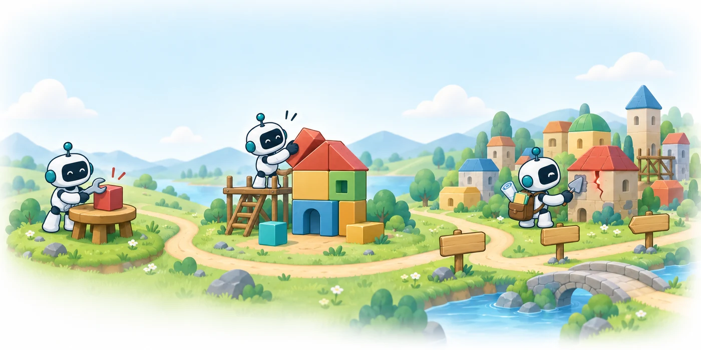

RQ1
What must persist for an agent to continue a software project?
Which artifacts, requirements, and retained knowledge connect earlier decisions to later work, and which benchmark protocols preserve those connections?
A survey2026
From tasks to projects

Software engineering agents can now navigate repositories, run tests, and resolve many real GitHub issues. Most evaluations, however, score each issue in isolation and discard the agent’s patch afterward, whereas real projects accumulate: today’s changes constrain tomorrow’s work. This survey examines what changes when an agent must keep working on software it has already produced.
We compare evaluation protocols on two axes: who produces the state that the next request starts from, and whether behavior accepted earlier is checked again. Along these axes, we organize runtime mechanisms, training methods, and evaluation practice, propose measures of retained functionality and of conformance to active requirements, and outline open problems that center on selective revision: keeping useful code and knowledge while correcting what later changes invalidate.
Controlled comparisons show that agents succeed markedly less often when they build on their own earlier work, and retaining the earlier conversation does not close this gap.
Only agent-produced chains that recheck earlier obligations can show whether an agent stays responsible for its own earlier work.
Runtime mechanisms act on state that outlives a request, yet almost all training in the reviewed work stays within a single request.
Benchmarks do not yet report cross-stage retention, recovery, and cost in a common form; retained functionality and conformance to active requirements can anchor one.
Evidence · ChainSWE, GPT-5.5
Per-issue resolution falls from 69.1% when each issue starts from earlier reference fixes, to 49.0% from the agent’s own patches, and 47.4% when the earlier dialogue is kept as well. All 21 combinations of the seven models and three configurations that ChainSWE reports lose accuracy from Oracle to Seq, by 29% to 48% in relative terms.
RQ1
Which artifacts, requirements, and retained knowledge connect earlier decisions to later work, and which benchmark protocols preserve those connections?
RQ2
How do context, execution, planning, verification, and learning interact, and under what conditions do memory, coordination, or feedback help?
RQ3
How can evaluation separate local success from retained functionality, conformance to active requirements, successful recovery, operational cost, and handoff quality?
Both measures are defined over an obligation record that the evaluator holds, and read at each checkpoint t of a run.
Rt
Does behavior accepted earlier still work?
The share of earlier obligations, still active under the current specification and with an eligible check, whose checks all still pass at checkpoint t.
Ft
Does the project now satisfy everything currently required of it?
The share of requirements the record lists as active at t, including requests the agent failed, whose checks pass at t.
Try it · after Plate XII
Each row is a five-stage chain, and a chain counts as successful only when all five stages pass. Click a stage to flip it, or move the same failures around.
Stage success —Chain success —
| Work condition | Design priority | What to measure |
|---|---|---|
| Bounded request | Localization, execution, bounded repair | Resolved cases and complete attempt cost |
| Long single request | Context selection and continuation | Overflow, early stopping, information loss |
| Continuing work | Revision-aware retrieval, regression tests, recovery | Agent-produced chains; earlier obligations rechecked |
| Parallel implementation | Dependency agreement; isolation | Integration and coordination cost |
| Interrupted work | Checkpoint with handoff notes | Matched takeover and recovery |
| Shared or deployed project | Integrating outside edits; bounded authority | Edits, review, service effects |
The thirteen figures of the manuscript, in order, with their captions. Select a plate to enlarge it.
Seventeen open problems in five groups, each with what is known and a first experiment that would move it.
Agents that revise in this way would let a team entrust a project to them and receive it back in better shape, with its history, its obligations, and the reasons behind its changes intact.
Every work the survey cites, newest first. Search by title, author, or venue.
Loading references…
@misc{luo2026longhorizonswe,
title = {Long-Horizon Software Engineering Agents: From Tasks to Projects},
author = {Luo, Meng and Li, Yanlin and Li, Kaixin and Tian, Yuchen and Cao, Shidong and Chen, Yanyu and Jian, Xiangru and Yang, Yan and Zhou, Pengfei and Luo, Ziyang and Lin, Hongzhan},
year = {2026},
howpublished = {\url{https://github.com/LongHorizonSWE/Awesome-LongHorizonSWE}},
note = {Manuscript}
}
Contact mluo@u.nus.edu · danielhzlin@nus.edu.sg